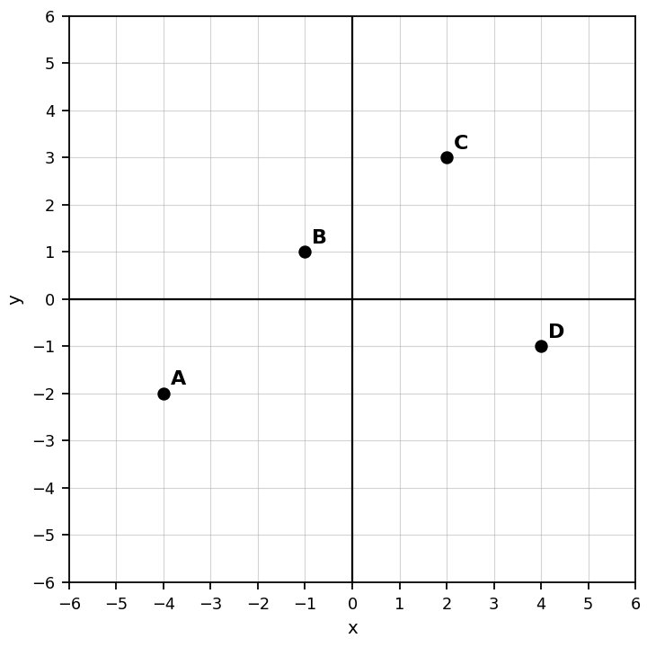

A team-sort card says: The cost is 3 dollars per ticket plus a 5 dollar starting fee. Which type of representation is this card: table, graph, equation, or situation?
Complete the table for the relationship $y=2x+1$.
| $x$ | 0 | 1 | 2 | 3 |
|---|---|---|---|---|
| $y$ |
Does the table match the equation $y=2x+1$? Explain how you know.
| $x$ | 0 | 1 | 2 | 3 |
|---|---|---|---|---|
| $y$ | 1 | 3 | 5 | 7 |
Use the coordinate plane. Write the coordinates of points A and D, then describe one relationship you notice among the plotted points.

Evaluate each absolute-value expression.
Simplify each expression.
Simplify each expression.
Evaluate.
Allie is making muffins for the Food Fair. Her recipe makes 3 dozen muffins and uses 16 ounces of chocolate chips. If she wants to make 8 dozen muffins, how many ounces of chocolate chips should she use? Show how you scaled the recipe.
Two employees can build 40 planters in 3 days. At the same rate, how many employees would be needed to build 60 planters in 1 day? Explain your reasoning.
A student claims that adding zero and multiplying by zero have the same effect because both use the number zero. Critique the claim using examples.
Create two different contexts that can be represented by $-18-7$. In each context, explain the meaning of the result.
In the ordered pair $(4,-2)$, identify the $x$-coordinate and the $y$-coordinate.
Name the quadrant containing $(-3,5)$. Explain how the signs of the coordinates help you know.
Use the table to write two ordered pairs. Then describe what happens to $y$ as $x$ increases.
| $x$ | 0 | 1 | 2 |
|---|---|---|---|
| $y$ | 3 | 6 | 9 |
State whether $(0,6)$ lies on the $x$-axis, the $y$-axis, or neither.